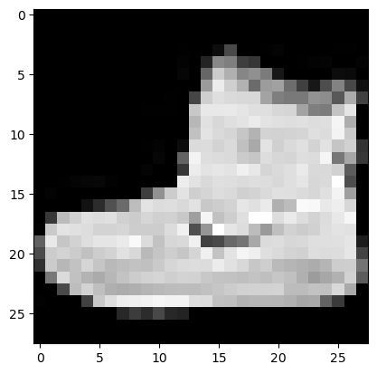
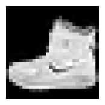
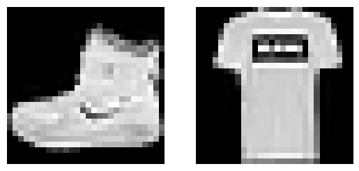
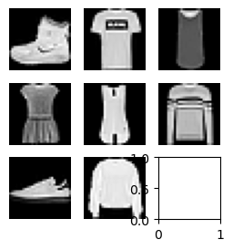
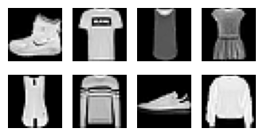
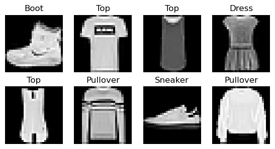

import torch
from torch import tensor
from torch.utils.data import DataLoader
import torchvision.transforms.functional as TF
from datasets import load_datasetHugging Face Datasets
name = "fashion_mnist"
dsd = load_dataset(name)
train, test = dsd['train'], dsd['test']
train[0]{'image': <PIL.PngImagePlugin.PngImageFile image mode=L size=28x28>,
'label': 9}x,y = 'image','label'
img = train[0][x]
imgxb = train[:5][x]
yb = train[:5][y]
featy = train.features[y]
yb, featy.int2str(yb)([9, 0, 0, 3, 0],
['Ankle boot',
'T - shirt / top',
'T - shirt / top',
'Dress',
'T - shirt / top'])inplace
inplace (f)
@inplace
def transformi(b): b[x] = [torch.flatten(TF.to_tensor(o)) for o in b[x]]collate_dict
collate_dict (ds)
tdsf = train.with_transform(transformi)
r = tdsf[0]
r[x].shape,r[y](torch.Size([784]), 9)dlf = DataLoader(tdsf, batch_size=4, collate_fn=collate_dict(tdsf))
xb,yb = next(iter(dlf))
xb.shape,yb(torch.Size([4, 784]), tensor([9, 0, 0, 3]))Plotting Images
import matplotlib as mpl
mpl.rcParams['image.cmap'] = 'gray'def collate_fn(b):
return {x:torch.stack([TF.to_tensor(o[x]) for o in b]),
y:tensor([o[y] for o in b])}dl = DataLoader(train, collate_fn=collate_fn, batch_size=16)
b = next(iter(dl))
b[x].shape,b[y](torch.Size([16, 1, 28, 28]),
tensor([9, 0, 0, 3, 0, 2, 7, 2, 5, 5, 0, 9, 5, 5, 7, 9]))b = next(iter(dl))
xb = b['image']
img = xb[0]
plt.imshow(img[0]);
/opt/hostedtoolcache/Python/3.10.13/x64/lib/python3.10/site-packages/fastcore/docscrape.py:225: UserWarning: Unknown section Other Parameters
else: warn(msg)
/opt/hostedtoolcache/Python/3.10.13/x64/lib/python3.10/site-packages/fastcore/docscrape.py:225: UserWarning: Unknown section See Also
else: warn(msg)
/opt/hostedtoolcache/Python/3.10.13/x64/lib/python3.10/site-packages/fastcore/docscrape.py:225: UserWarning: Unknown section Notes
else: warn(msg)show_image
show_image (im, ax=None, figsize=None, title=None, noframe=True, cmap=None, norm=None, aspect=None, interpolation=None, alpha=None, vmin=None, vmax=None, origin=None, extent=None, interpolation_stage=None, filternorm=True, filterrad=4.0, resample=None, url=None, data=None)
Show a PIL or PyTorch image on ax.
| Type | Default | Details | |
|---|---|---|---|
| im | |||
| ax | NoneType | None | |
| figsize | NoneType | None | |
| title | NoneType | None | |
| noframe | bool | True | |
| cmap | NoneType | None | The Colormap instance or registered colormap name used to map scalar data to colors. This parameter is ignored if X is RGB(A). |
| norm | NoneType | None | The normalization method used to scale scalar data to the [0, 1] range before mapping to colors using cmap. By default, a linear scaling is used, mapping the lowest value to 0 and the highest to 1. If given, this can be one of the following: - An instance of .Normalize or one of its subclasses(see :ref: colormapnorms).- A scale name, i.e. one of “linear”, “log”, “symlog”, “logit”, etc. For a list of available scales, call matplotlib.scale.get_scale_names().In that case, a suitable .Normalize subclass is dynamically generatedand instantiated. This parameter is ignored if X is RGB(A). |
| aspect | NoneType | None | The aspect ratio of the Axes. This parameter is particularly relevant for images since it determines whether data pixels are square. This parameter is a shortcut for explicitly calling .Axes.set_aspect. See there for further details.- ‘equal’: Ensures an aspect ratio of 1. Pixels will be square (unless pixel sizes are explicitly made non-square in data coordinates using extent). - ‘auto’: The Axes is kept fixed and the aspect is adjusted so that the data fit in the Axes. In general, this will result in non-square pixels. Normally, None (the default) means to use :rc: image.aspect. However, ifthe image uses a transform that does not contain the axes data transform, then None means to not modify the axes aspect at all (in that case, directly call .Axes.set_aspect if desired). |
| interpolation | NoneType | None | The interpolation method used. Supported values are ‘none’, ‘antialiased’, ‘nearest’, ‘bilinear’, ‘bicubic’, ‘spline16’, ‘spline36’, ‘hanning’, ‘hamming’, ‘hermite’, ‘kaiser’, ‘quadric’, ‘catrom’, ‘gaussian’, ‘bessel’, ‘mitchell’, ‘sinc’, ‘lanczos’, ‘blackman’. The data X is resampled to the pixel size of the image on the figure canvas, using the interpolation method to either up- or downsample the data. If interpolation is ‘none’, then for the ps, pdf, and svg backends no down- or upsampling occurs, and the image data is passed to the backend as a native image. Note that different ps, pdf, and svg viewers may display these raw pixels differently. On other backends, ‘none’ is the same as ‘nearest’. If interpolation is the default ‘antialiased’, then ‘nearest’ interpolation is used if the image is upsampled by more than a factor of three (i.e. the number of display pixels is at least three times the size of the data array). If the upsampling rate is smaller than 3, or the image is downsampled, then ‘hanning’ interpolation is used to act as an anti-aliasing filter, unless the image happens to be upsampled by exactly a factor of two or one. See :doc: /gallery/images_contours_and_fields/interpolation_methodsfor an overview of the supported interpolation methods, and :doc: /gallery/images_contours_and_fields/image_antialiasing fora discussion of image antialiasing. Some interpolation methods require an additional radius parameter, which can be set by filterrad. Additionally, the antigrain image resize filter is controlled by the parameter filternorm. |
| alpha | NoneType | None | The alpha blending value, between 0 (transparent) and 1 (opaque). If alpha is an array, the alpha blending values are applied pixel by pixel, and alpha must have the same shape as X. |
| vmin | NoneType | None | |
| vmax | NoneType | None | |
| origin | NoneType | None | Place the [0, 0] index of the array in the upper left or lower left corner of the Axes. The convention (the default) ‘upper’ is typically used for matrices and images. Note that the vertical axis points upward for ‘lower’ but downward for ‘upper’. See the :ref: imshow_extent tutorial forexamples and a more detailed description. |
| extent | NoneType | None | The bounding box in data coordinates that the image will fill. These values may be unitful and match the units of the Axes. The image is stretched individually along x and y to fill the box. The default extent is determined by the following conditions. Pixels have unit size in data coordinates. Their centers are on integer coordinates, and their center coordinates range from 0 to columns-1 horizontally and from 0 to rows-1 vertically. Note that the direction of the vertical axis and thus the default values for top and bottom depend on origin: - For origin == 'upper' the default is(-0.5, numcols-0.5, numrows-0.5, -0.5).- For origin == 'lower' the default is(-0.5, numcols-0.5, -0.5, numrows-0.5).See the :ref: imshow_extent tutorial forexamples and a more detailed description. |
| interpolation_stage | NoneType | None | If ‘data’, interpolation is carried out on the data provided by the user. If ‘rgba’, the interpolation is carried out after the colormapping has been applied (visual interpolation). |
| filternorm | bool | True | A parameter for the antigrain image resize filter (see the antigrain documentation). If filternorm is set, the filter normalizes integer values and corrects the rounding errors. It doesn’t do anything with the source floating point values, it corrects only integers according to the rule of 1.0 which means that any sum of pixel weights must be equal to 1.0. So, the filter function must produce a graph of the proper shape. |
| filterrad | float | 4.0 | The filter radius for filters that have a radius parameter, i.e. when interpolation is one of: ‘sinc’, ‘lanczos’ or ‘blackman’. |
| resample | NoneType | None | When True, use a full resampling method. When False, only resample when the output image is larger than the input image. |
| url | NoneType | None | Set the url of the created .AxesImage. See .Artist.set_url. |
| data | NoneType | None |
show_image(img, figsize=(2,2));
fig,axs = plt.subplots(1,2)
show_image(xb[0], axs[0])
show_image(xb[1], axs[1]);
subplots
subplots (nrows:int=1, ncols:int=1, figsize:tuple=None, imsize:int=3, suptitle:str=None, sharex:"bool|Literal['none','all','row','col']"=False, sharey:"bool|Literal['none','all','row','col']"=False, squeeze:bool=True, width_ratios:Sequence[float]|None=None, height_ratios:Sequence[float]|None=None, subplot_kw:dict[str,Any]|None=None, gridspec_kw:dict[str,Any]|None=None, **kwargs)
A figure and set of subplots to display images of imsize inches
| Type | Default | Details | |
|---|---|---|---|
| nrows | int | 1 | Number of rows in returned axes grid |
| ncols | int | 1 | Number of columns in returned axes grid |
| figsize | tuple | None | Width, height in inches of the returned figure |
| imsize | int | 3 | Size (in inches) of images that will be displayed in the returned figure |
| suptitle | str | None | Title to be set to returned figure |
| sharex | bool | Literal[‘none’, ‘all’, ‘row’, ‘col’] | False | |
| sharey | bool | Literal[‘none’, ‘all’, ‘row’, ‘col’] | False | |
| squeeze | bool | True | |
| width_ratios | Sequence[float] | None | None | |
| height_ratios | Sequence[float] | None | None | |
| subplot_kw | dict[str, Any] | None | None | |
| gridspec_kw | dict[str, Any] | None | None | |
| kwargs |
fig,axs = subplots(3,3, imsize=1)
imgs = xb[:8]
for ax,img in zip(axs.flat,imgs): show_image(img, ax)
get_grid
get_grid (n:int, nrows:int=None, ncols:int=None, title:str=None, weight:str='bold', size:int=14, figsize:tuple=None, imsize:int=3, suptitle:str=None, sharex:"bool|Literal['none','all','row','col']"=False, sharey:"bool|Literal['none','all','row','col']"=False, squeeze:bool=True, width_ratios:Sequence[float]|None=None, height_ratios:Sequence[float]|None=None, subplot_kw:dict[str,Any]|None=None, gridspec_kw:dict[str,Any]|None=None)
Return a grid of n axes, rows by cols
| Type | Default | Details | |
|---|---|---|---|
| n | int | Number of axes | |
| nrows | int | None | Number of rows, defaulting to int(math.sqrt(n)) |
| ncols | int | None | Number of columns, defaulting to ceil(n/rows) |
| title | str | None | If passed, title set to the figure |
| weight | str | bold | Title font weight |
| size | int | 14 | Title font size |
| figsize | tuple | None | Width, height in inches of the returned figure |
| imsize | int | 3 | Size (in inches) of images that will be displayed in the returned figure |
| suptitle | str | None | Title to be set to returned figure |
| sharex | bool | Literal[‘none’, ‘all’, ‘row’, ‘col’] | False | |
| sharey | bool | Literal[‘none’, ‘all’, ‘row’, ‘col’] | False | |
| squeeze | bool | True | |
| width_ratios | Sequence[float] | None | None | |
| height_ratios | Sequence[float] | None | None | |
| subplot_kw | dict[str, Any] | None | None | |
| gridspec_kw | dict[str, Any] | None | None |
fig,axs = get_grid(8, imsize=1)
for ax,img in zip(axs.flat,imgs): show_image(img, ax)
show_images
show_images (ims:list, nrows:int|None=None, ncols:int|None=None, titles:list|None=None, figsize:tuple=None, imsize:int=3, suptitle:str=None, sharex:"bool|Literal['none','all','row','col']"=False, sharey:"bool|Literal['none','all','row','col']"=False, squeeze:bool=True, width_ratios:Sequence[float]|None=None, height_ratios:Sequence[float]|None=None, subplot_kw:dict[str,Any]|None=None, gridspec_kw:dict[str,Any]|None=None)
Show all images ims as subplots with rows using titles
| Type | Default | Details | |
|---|---|---|---|
| ims | list | Images to show | |
| nrows | int | None | None | Number of rows in grid |
| ncols | int | None | None | Number of columns in grid (auto-calculated if None) |
| titles | list | None | None | Optional list of titles for each image |
| figsize | tuple | None | Width, height in inches of the returned figure |
| imsize | int | 3 | Size (in inches) of images that will be displayed in the returned figure |
| suptitle | str | None | Title to be set to returned figure |
| sharex | bool | Literal[‘none’, ‘all’, ‘row’, ‘col’] | False | |
| sharey | bool | Literal[‘none’, ‘all’, ‘row’, ‘col’] | False | |
| squeeze | bool | True | |
| width_ratios | Sequence[float] | None | None | |
| height_ratios | Sequence[float] | None | None | |
| subplot_kw | dict[str, Any] | None | None | |
| gridspec_kw | dict[str, Any] | None | None |
yb = b['label']
lbls = yb[:8]
names = "Top Trouser Pullover Dress Coat Sandal Shirt Sneaker Bag Boot".split()
titles = itemgetter(*lbls)(names)
' '.join(titles)'Boot Top Top Dress Top Pullover Sneaker Pullover'show_images(imgs, imsize=1.7, titles=titles)
get_dls
get_dls (train_ds, valid_ds, bs, **kwargs)
DataLoaders
DataLoaders (*dls)
Initialize self. See help(type(self)) for accurate signature.
import nbdev; nbdev.nbdev_export()